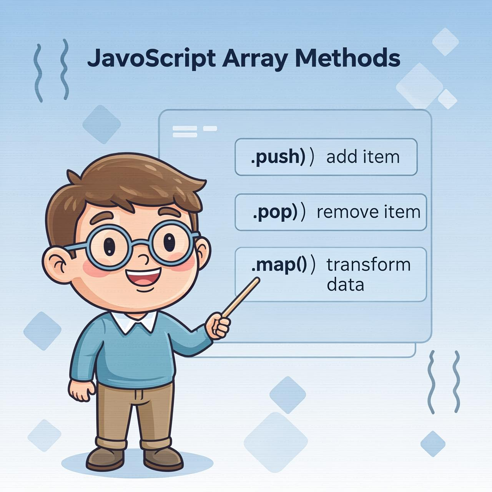

Comprehensive guide to JavaScript array operations

Arrays provide a lot of methods. To make things easier, in this chapter, they are split into groups.
We already know methods that add and remove items from the beginning or the end:
Here are a few others.
The Swiss army knife for arrays
The arrays are objects, so we can try to use delete:
The element was removed, but the array still has 3 elements, we can see that arr.length == 3.
That's natural, because delete obj.key removes a value by the key. It's all it does. Fine for objects. But for arrays we usually want the rest of the elements to shift and occupy the freed place. We expect to have a shorter array now.
So, special methods should be used.
The arr.splice method is a Swiss army knife for arrays. It can do everything: insert, remove and replace elements.
The syntax is:
It modifies arr starting from the index start: removes deleteCount elements and then inserts elem1, ..., elemN at their place. Returns the array of removed elements.
This method is easy to grasp by examples.
Let's start with the deletion:
Easy, right? Starting from the index 1 it removed 1 element.
In the next example, we remove 3 elements and replace them with the other two:
Here we can see that splice returns the array of removed elements:
The splice method is also able to insert the elements without any removals. For that, we need to set deleteCount to 0:
Here and in other array methods, negative indexes are allowed. They specify the position from the end of the array, like here:
Creating new arrays from existing ones
The method arr.slice is much simpler than the similar-looking arr.splice.
The syntax is:
It returns a new array copying to it all items from index start to end (not including end). Both start and end can be negative, in that case position from array end is assumed.
It's similar to a string method str.slice, but instead of substrings, it makes subarrays.
For instance:
We can also call it without arguments: arr.slice() creates a copy of arr. That's often used to obtain a copy for further transformations that should not affect the original array.
The method arr.concat creates a new array that includes values from other arrays and additional items.
The syntax is:
It accepts any number of arguments – either arrays or values.
The result is a new array containing items from arr, then arg1, arg2 etc.
If an argument argN is an array, then all its elements are copied. Otherwise, the argument itself is copied.
For instance:
Normally, it only copies elements from arrays. Other objects, even if they look like arrays, are added as a whole:
...But if an array-like object has a special Symbol.isConcatSpreadable property, then it's treated as an array by concat: its elements are added instead:
Running a function for every element
The arr.forEach method allows to run a function for every element of the array.
The syntax:
For instance, this shows each element of the array:
And this code is more elaborate about their positions in the target array:
The result of the function (if it returns any) is thrown away and ignored.
forEach is a great method when you need to execute a function for each element of an array, but you don't need to create a new array or return a value. If you need to transform each element and create a new array, use map instead.
Arrow functions make the code more concise:
Or even more concise for simple operations:
Unlike a regular for loop, you cannot break out of a forEach loop using break. If you need to break early, you should use a for loop or for..of instead.
However, you can throw an exception to stop the iteration, but this is generally not recommended as it makes the code harder to understand and debug:
Finding elements in arrays
Now let's cover methods that search in an array.
The methods arr.indexOf and arr.includes have the similar syntax and do essentially the same as their string counterparts, but operate on items instead of characters:
Usually, these methods are used with only one argument: the item to search. By default, the search is from the beginning.
For instance:
Please note that indexOf uses the strict equality === for comparison. So, if we look for false, it finds exactly false and not the zero.
If we want to check if item exists in the array and don't need the index, then arr.includes is preferred.
The method arr.lastIndexOf is the same as indexOf, but looks for from right to left.
A minor, but noteworthy feature of includes is that it correctly handles NaN, unlike indexOf:
That's because includes was added to JavaScript much later and uses the more up-to-date comparison algorithm internally.
Imagine we have an array of objects. How do we find an object with a specific condition?
Here the arr.find(fn) method comes in handy.
The syntax is:
The function is called for elements of the array, one after another:
If it returns true, the search is stopped, the item is returned. If nothing is found, undefined is returned.
For example, we have an array of users, each with the fields id and name. Let's find the one with id == 1:
In real life, arrays of objects are a common thing, so the find method is very useful.
Note that in the example we provide to find the function item => item.id == 1 with one argument. That's typical, other arguments of this function are rarely used.
The arr.findIndex method has the same syntax but returns the index where the element was found instead of the element itself. The value of -1 is returned if nothing is found.
The arr.findLastIndex method is like findIndex, but searches from right to left, similar to lastIndexOf.
Here's an example:
Finding all matching elements
The find method looks for a single (first) element that makes the function return true.
If there may be many, we can use arr.filter(fn).
The syntax is similar to find, but filter returns an array of all matching elements:
For instance:
While both methods use a testing function, they serve different purposes:
Choose find() when you need only the first match, and filter() when you need all matches.
Filter is often used with other array methods in a chain:
Method chaining is a powerful technique that allows you to perform multiple operations on an array in a clean, readable way. Each method in the chain operates on the result of the previous method.
Methods that change array contents
Let's move on to methods that transform and reorder an array.
The arr.map method is one of the most useful and often used.
It calls the function for each element of the array and returns the array of results.
The syntax is:
For instance, here we transform each element into its length:
The call to arr.sort() sorts the array in place, changing its element order.
It also returns the sorted array, but the returned value is usually ignored, as arr itself is modified.
For instance:
Did you notice anything strange in the outcome?
The order became 1, 15, 2. Incorrect. But why?
The items are sorted as strings by default.
Literally, all elements are converted to strings for comparisons. For strings, lexicographic ordering is applied and indeed "2" > "15".
To use our own sorting order, we need to supply a function as the argument of arr.sort().
The function should compare two arbitrary values and return:
For instance, to sort as numbers:
Now it works as intended.
A comparison function may return any number
Actually, a comparison function is only required to return a positive number to say "greater" and a negative number to say "less".
That allows to write shorter functions:
Arrow functions for the best
Remember arrow functions? We can use them here for neater sorting:
This works exactly the same as the longer version above.
Remember strings comparison algorithm? It compares letters by their codes by default.
For many alphabets, it's better to use str.localeCompare method to correctly sort letters, such as Ö.
For example, let's sort a few countries in German:
The method arr.reverse reverses the order of elements in arr.
For instance:
It also returns the array arr after the reversal.
Converting between strings and arrays
Here's the situation from real life. We are writing a messaging app, and the person enters the comma-delimited list of receivers: John, Pete, Mary. But for us an array of names would be much more comfortable than a single string. How to get it?
The str.split(delim) method does exactly that. It splits the string into an array by the given delimiter delim.
In the example below, we split by a comma followed by a space:
The split method has an optional second numeric argument – a limit on the array length. If it is provided, then the extra elements are ignored. In practice it is rarely used though:
The call to split(s) with an empty s would split the string into an array of letters:
The call arr.join(glue) does the reverse to split. It creates a string of arr items joined by glue between them.
For instance:
Let's combine split and join to parse a CSV (Comma-Separated Values) string:
In the example above, we have an issue with the header row. In a real application, you would need to handle the header separately from the data rows.
Split and join are powerful methods for converting between strings and arrays, which is a common operation in data processing tasks.
Calculating a single value from an array
When we need to iterate over an array – we can use forEach, for or for..of.
When we need to iterate and return the data for each element – we can use map.
The methods arr.reduce and arr.reduceRight also belong to that breed, but are a little bit more intricate. They are used to calculate a single value based on the array.
The syntax is:
The function is applied to all array elements one after another and "carries on" its result to the next call.
Arguments:
As the function is applied, the result of the previous function call is passed to the next one as the first argument.
So, the first argument is essentially the accumulator that stores the combined result of all previous executions. And at the end, it becomes the result of reduce.
Sounds complicated?
The easiest way to grasp that is by example.
Here we get a sum of an array in one line:
The function passed to reduce uses only 2 arguments, that's typically enough.
Let's see the details of what's going on.
On the first run, sum is the initial value (the last argument of reduce), equals 0, and current is the first array element, equals 1. So the function result is 1.
On the second run, sum = 1, we add the second array element (2) to it and return.
On the 3rd run, sum = 3 and we add one more element to it, and so on…
The calculation flow:
| sum | current | result | |
|---|---|---|---|
| the first call | 0 | 1 | 1 |
| the second call | 1 | 2 | 3 |
| the third call | 3 | 3 | 6 |
| the fourth call | 6 | 4 | 10 |
| the fifth call | 10 | 5 | 15 |
Here we can clearly see how the result of the previous call becomes the first argument of the next one.
We also can omit the initial value:
The result is the same. That's because if there's no initial, then reduce takes the first element of the array as the initial value and starts the iteration from the 2nd element.
But such use requires an extreme care. If the array is empty, then reduce call without initial value gives an error.
Here's an example:
So it's advised to always specify the initial value.
The method arr.reduceRight does the same but goes from right to left.
Flattening an array of arrays:
Counting occurrences of items:
Reduce is a powerful method for transforming arrays into a single value, but it can be harder to read than a simple loop. Use it when the operation is truly a reduction of the array to a single value, otherwise consider using a loop or other array methods.
Type checking and context binding
Arrays do not form a separate language type. They are based on objects.
So typeof does not help to distinguish a plain object from an array:
...But arrays are used so often that there's a special method for that: Array.isArray(value). It returns true if the value is an array, and false otherwise.
Almost all array methods that call functions – like find, filter, map, with a notable exception of sort, accept an optional additional parameter thisArg.
That parameter is not explained in the sections above, because it's rarely used. But for completeness, we have to cover it.
Here's the full syntax of these methods:
The value of thisArg parameter becomes this for func.
For example, here we use a method of army object as a filter, and thisArg passes the context:
If in the example above we used users.filter(army.canJoin), then army.canJoin would be called as a standalone function, with this=undefined, thus leading to an instant error.
A call to users.filter(army.canJoin, army) can be replaced with users.filter(user => army.canJoin(user)), that does the same. The latter is used more often, as it's a bit easier to understand for most people.
The thisArg parameter is particularly useful when working with object-oriented programming in JavaScript, where you might want to use methods from one object as callbacks for array operations.
Complete overview of JavaScript array methods
Please note that methods sort, reverse and splice modify the array itself.
These methods are the most used ones, they cover 99% of use cases. But there are few others:
These methods behave sort of like || and && operators: if fn returns a truthy value, arr.some() immediately returns true and stops iterating over the rest of items; if fn returns a falsy value, arr.every() immediately returns false and stops iterating over the rest of items as well.
We can use every to compare arrays:
For the full list, see the manual.
At first sight, it may seem that there are so many methods, quite difficult to remember. But actually, that's much easier.
Look through the cheat sheet just to be aware of them. Then solve the tasks of this chapter to practice, so that you have experience with array methods.
Afterwards whenever you need to do something with an array, and you don't know how – come here, look at the cheat sheet and find the right method. Examples will help you to write it correctly. Soon you'll automatically remember the methods, without specific efforts from your side.
Congratulations! You've completed the comprehensive guide to JavaScript Array Methods. Keep practicing and exploring these concepts to become a JavaScript expert!